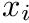

This module provides the GLL collocation points and corresponding weights for GLL-integration of degree 1 to 7. More...
Functions/Subroutines | |
| pure real(rk) function, dimension(lpd+1), public | get_knots (lpd) |
| Returns the GLL collocation points from degree 1 to 7. More... | |
| pure real(rk) function, dimension(lpd+1), public | get_weights (lpd) |
| Returns weights used for the so called GLL integration for degree 1 to 7. More... | |
| elemental real(rk) function, public | get_dlgll (n, i, j) |
| Returns the derivatives of GLL polynomials at collocation point j. More... | |
Variables | |
| real(rk), dimension(*), parameter | knots_1 = [-1.0_rk, 1.0_rk ] |
| GLL collocation points of degree 2. More... | |
| real(rk), dimension(*), parameter | weights_1 = [ 0.5_rk, 0.5_rk ] |
| Weights for GLL integration of degree 2. More... | |
| real(rk), dimension(*), parameter | knots_2 = [-1.0_rk, 0.0_rk, 1.0_rk ] |
| GLL collocation points of degree 2. More... | |
| real(rk), dimension(*), parameter | weights_2 = [ 1.0_rk / 3.0_rk, 4.0_rk / 3.0_rk, 1.0_rk / 3.0_rk ] |
| Weights for GLL integration of degree 2. More... | |
| real(rk), dimension(*), parameter | knots_3 = [-1.0_rk, -SQRT( 1.0_rk / 5.0_rk ), SQRT( 1.0_rk / 5.0_rk ), 1.0_rk ] |
| GLL collocation points of degree 3. More... | |
| real(rk), dimension(*), parameter | weights_3 = [ 1.0_rk / 6.0_rk, 5.0_rk / 6.0_rk, 5.0_rk / 6.0_rk, 1.0_rk / 6.0_rk ] |
| Weights for GLL integration of degree 3. More... | |
| real(rk), dimension(*), parameter | knots_4 = [-1.0_rk, -SQRT( 3.0_rk / 7.0_rk ), 0.0_rk, SQRT( 3.0_rk / 7.0_rk ), 1.0_rk ] |
| GLL collocation points of degree 4. More... | |
| real(rk), dimension(*), parameter | weights_4 = [ 1.0_rk / 10.0_rk, 49.0_rk / 90.0_rk, 32.0_rk / 45.0_rk, 49.0_rk / 90.0_rk, 1.0_rk / 10.0_rk ] |
| Weights for GLL integration of degree 4. More... | |
| real(rk), dimension(*), parameter | knots_5 = [-1.0_rk, -SQRT( 2.0_rk * SQRT( 7.0_rk ) + 7.0_rk ) / SQRT( 21.0_rk ), -SQRT( 7.0_rk - 2.0_rk * SQRT( 7.0_rk ) ) / SQRT( 21.0_rk ), SQRT( 7.0_rk - 2.0_rk * SQRT( 7.0_rk ) ) / SQRT( 21.0_rk ), SQRT( 2.0_rk * SQRT( 7.0_rk) + 7.0_rk ) / SQRT( 21.0_rk ), 1.0_rk ] |
| GLL collocation points of degree 5. More... | |
| real(rk), dimension(*), parameter | weights_5 = [ 1.0_rk / 15.0_rk, 63.0_rk / (10.0_rk * SQRT( 7.0_rk ) + 140.0_rk ), -63.0_rk / (10.0_rk * SQRT( 7.0_rk ) - 140.0_rk ), -63.0_rk / (10.0_rk * SQRT( 7.0_rk ) - 140.0_rk ), 63.0_rk / (10.0_rk * SQRT( 7.0_rk ) + 140.0_rk ), 1.0_rk / 15.0_rk ] |
| Weights for GLL integration of degree 5. More... | |
| real(rk), dimension(*), parameter | knots_6 = [-1.0_rk, -SQRT( 2.0_rk * SQRT( 15.0_rk ) + 15.0_rk ) / SQRT( 33.0_rk ), -SQRT( 15.0_rk - 2.0_rk * SQRT( 15.0_rk ) ) / SQRT( 33.0_rk ), 0.0_rk, SQRT( 15.0_rk - 2.0_rk * SQRT( 15.0_rk ) ) / SQRT( 33.0_rk ), SQRT( 2.0_rk * SQRT( 15.0_rk ) + 15.0_rk ) / SQRT( 33.0_rk ), 1.0_rk ] |
| GLL collocation points of degree 6. More... | |
| real(rk), dimension(*), parameter | weights_6 = [ 1.0_rk / 21.0_rk, 14641.0_rk / ( 2450.0_rk * SQRT( 15.0_rk ) + 43400.0_rk ), -14641.0_rk / ( 2450.0_rk * SQRT( 15.0_rk ) - 43400.0_rk ), 256.0_rk / 525.0_rk, -14641.0_rk / ( 2450.0_rk * SQRT( 15.0_rk ) - 43400.0_rk ), 14641.0_rk / ( 2450.0_rk * SQRT( 15.0_rk ) + 43400.0_rk ), 1.0_rk / 21.0_rk ] |
| Weights for GLL integration of degree 6. More... | |
| real(rk), dimension(*), parameter | knots_7 = [-1.0_rk, -0.8717401485096066_rk, -0.5917001814331423_rk, -0.2092992179024789_rk, 0.2092992179024789_rk, 0.5917001814331423_rk, 0.8717401485096066_rk, 1.0_rk ] |
| GLL collocation points of degree 7. More... | |
| real(rk), dimension(*), parameter | weights_7 = [ 0.0357142857142857_rk, 0.2107042271435061_rk, 0.3411226924835044_rk, 0.4124587946587038_rk, 0.4124587946587038_rk, 0.3411226924835044_rk, 0.2107042271435061_rk, 0.0357142857142857_rk ] |
| Weights for GLL integration of degree 7. More... | |
Detailed Description
This module provides the GLL collocation points and corresponding weights for GLL-integration of degree 1 to 7.
The GLL nodes are given by the roots of the Legendre polynomials  of degree . The boundaries of the interval are additionally included as node points
of degree . The boundaries of the interval are additionally included as node points
For the GLL Quadrature the weights are defined by the integral over the Lagrange polynomials. Including the definition of the GLL collocation points  the corresponding weights  can be written in a closed form
can be written in a closed form
where denotes the -th Lagrange polynomial of degree . For Lagrange interpolation see interp_mod.
- Todo:
- Tests gll_test.f90
The archived accuracy is at machine precision. The module expects to find the parameter parameters_mod::real_kind in a module named parameters_mod which defines the accuracy of floating point numbers.
Function/Subroutine Documentation
◆ get_dlgll()
| elemental real(rk) function, public gll_mod::get_dlgll | ( | integer, intent(in) | n, |
| integer, intent(in) | i, | ||
| integer, intent(in) | j | ||
| ) |
Returns the derivatives of GLL polynomials at collocation point j.
- Todo:
- Document how the derivative is obtained
- Todo:
- This is super cryptic it must become nicer
- Parameters
-
n Degree of the Lagrange polynomial i Index of the Lagrange polynomial j Index of the collocation point where the derivative is evaluated
- Returns
- 1st derivative of the Lagrange polynomial at the j-th collocation point
Definition at line 251 of file gll_mod.f90.
◆ get_knots()
| pure real(rk) function, dimension(lpd+1), public gll_mod::get_knots | ( | integer, intent(in) | lpd | ) |
Returns the GLL collocation points from degree 1 to 7.
- If lpd is smaller than 1 an zero-size array is returned
- If lpd is bigger tan 7 an empty array of size lpd+1
- Parameters
-
lpd Lagrange polynomial degree
- Returns
- The GLL collocation points; An array of size lpd+1
Definition at line 178 of file gll_mod.f90.
◆ get_weights()
| pure real(rk) function, dimension(lpd+1), public gll_mod::get_weights | ( | integer, intent(in) | lpd | ) |
Returns weights used for the so called GLL integration for degree 1 to 7.
- If lpd is smaller than 1 an zero-size array is returned
- If lpd is bigger tan 7 an empty array of size lpd+1
- Parameters
-
lpd Lagrange polynomial degree
- Returns
- The GLL collocation points; An array of size lpd+1
Definition at line 213 of file gll_mod.f90.
Variable Documentation
◆ knots_1
|
private |
GLL collocation points of degree 2.
- Todo:
- check if those dummy values work
Definition at line 61 of file gll_mod.f90.
◆ knots_2
|
private |
GLL collocation points of degree 2.
Definition at line 71 of file gll_mod.f90.
◆ knots_3
|
private |
GLL collocation points of degree 3.
Definition at line 82 of file gll_mod.f90.
◆ knots_4
|
private |
GLL collocation points of degree 4.
Definition at line 95 of file gll_mod.f90.
◆ knots_5
|
private |
◆ knots_6
|
private |
◆ knots_7
|
private |
GLL collocation points of degree 7.
- Todo:
- must be replaced by its analytic expressions
Definition at line 147 of file gll_mod.f90.
◆ weights_1
|
private |
Weights for GLL integration of degree 2.
- Todo:
- check if those dummy values work
Definition at line 66 of file gll_mod.f90.
◆ weights_2
|
private |
Weights for GLL integration of degree 2.
Definition at line 76 of file gll_mod.f90.
◆ weights_3
|
private |
Weights for GLL integration of degree 3.
Definition at line 88 of file gll_mod.f90.
◆ weights_4
|
private |
Weights for GLL integration of degree 4.
Definition at line 102 of file gll_mod.f90.
◆ weights_5
|
private |
◆ weights_6
|
private |
◆ weights_7
|
private |
Weights for GLL integration of degree 7.
Definition at line 157 of file gll_mod.f90.